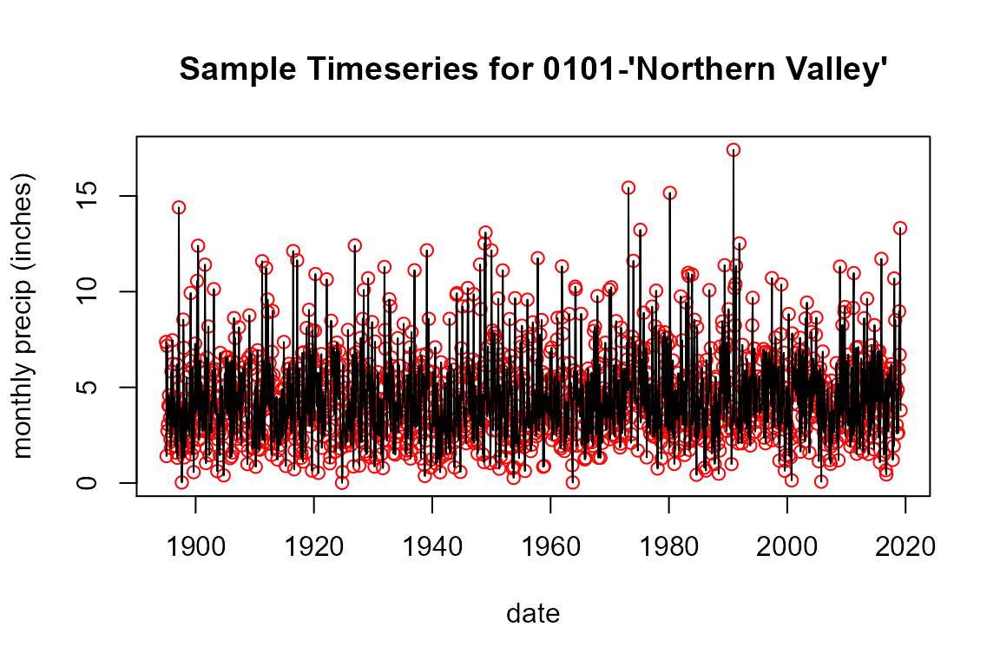
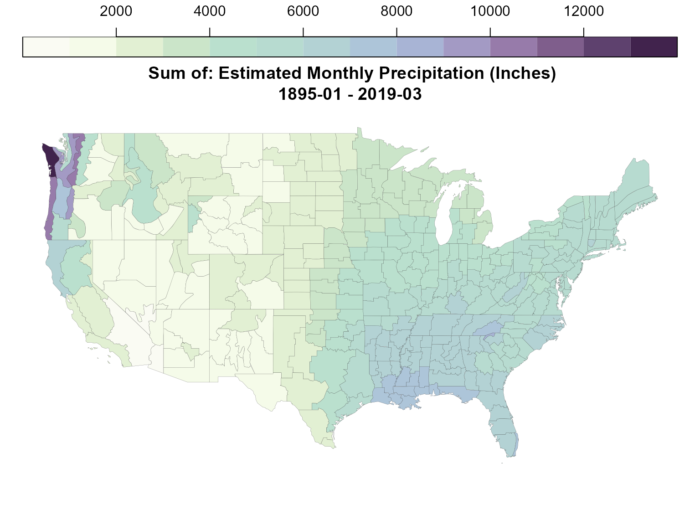

ncdfgeom is intended to write spatial geometries, their
attributes, and timeseries data (that would typically be stored in two
or more files) into a single file. The package provides functions to
read and write NetCDF-CF Discrete Sampling Geometries point and
timeseries feature types as well as NetCDF-CF spatial geometries. These
utilities are meant to be general, but were designed to support working
with typical geospatial feature data with linked attributes and time
series in NetCDF. Supported data types include:
data.frame tables with one row per
geometry are read from or written to NetCDF variables.data.frame tables with a time series per column are
read from or written as NetCDF-CF DSG timeSeries FeatureType data.data.frame table variables with a single-time-step
observation for a given point location in each row are written to a
NetCDF-CF DSG Point FeatureType.sp and sf spatial point, line, and polygon
types can be read from or written to NetCDF-CF geometry variables
introduced in CF-1.8For timeseries, two formats are supported:
data.frame with timesteps in rows and
geometry “instances” in columns with required attributes of geometry
“instances” provided separately. This format lends its self to data
where the same timestamps are used for every row and data exists for all
geometry instances for all time steps – it is sometimes referred to as
the orthogonal array, or “space-wide”, encoding.data.frame where each row contains all
the geometry “instance” metadata, a time stamp, and the variables to be
stored for that time step. This format lends it self to data where each
geometry instance has unique timesteps and/or data is not available for
each geometry instance at the same timesteps (sparse arrays).Additional read / write functions to include additional DSG feature
types will be implemented in the future and contributions are welcomed.
ncdfgeom is a work in progress. Please review the “issues” list to
submit issues and/or see what changes are planned.
At the time of writing, installation is only available via
remotes or building the package directly as one would for
development purposes.
install.packages("remotes")
remotes::install_github("DOI-USGS/ncdfgeom")When on CRAN, the package will be installed with the typical install.packages method.
install.packages("ncdfgeom")For this demo, we’ll use sf, dplyr, and
ncdfgeom.
We will start with two dataframes: prcp_data and
climdiv_poly containing precipitation estimate
timeseries and polygon geometries that describe the boundaries of
climate divisions respectively. The precipitation data has one time
series for each geometry.
Code to download and prep these data is shown at the bottom. More info about the data can be found at: doi:10.7289/V5M32STR
The data required for this demo has been cached in the
ncdfgeom package and is available as shown below.
prcp_data
prcp_data <- readRDS(system.file("extdata/climdiv-pcpndv.rds", package = "ncdfgeom"))
print(prcp_data, max_extra_cols = 0)
#> # A tibble: 1,491 × 345
#> date `0101` `0102` `0103` `0104` `0105` `0106` `0107` `0108` `0201`
#> <date> <dbl> <dbl> <dbl> <dbl> <dbl> <dbl> <dbl> <dbl> <dbl>
#> 1 1895-01-01 7.37 8.11 7.77 7.72 7.42 7.39 7.46 6.61 2.8
#> 2 1895-02-01 1.41 2.37 2.27 2.72 2.94 2.85 2.97 3.65 0.8
#> 3 1895-03-01 7.17 7.5 7.16 7.48 8.29 7.92 7.88 6.66 0.52
#> 4 1895-04-01 2.72 3.17 3.07 3.29 4.65 3.4 3.85 4.72 0.06
#> 5 1895-05-01 3.06 4.23 2.78 4.61 4.99 3.84 3.73 3.7 0.47
#> 6 1895-06-01 4.04 4.68 5.07 4.02 4.09 5.89 6.93 11.9 0.06
#> 7 1895-07-01 4.58 4.83 4.09 4.29 4.03 3.74 4.59 7.76 0.27
#> 8 1895-08-01 4 5.16 3.81 5.26 4.82 4.26 6.13 7.97 0.93
#> 9 1895-09-01 3.41 2.25 1.64 1.52 0.67 0.98 1.25 2.46 0.12
#> 10 1895-10-01 2.28 2.29 2.38 2.03 1.93 2.03 2.14 3.21 0.33
#> # ℹ 1,481 more rows
plot(prcp_data$date, prcp_data$`0101`, col = "red",
xlab = "date", ylab = "monthly precip (inches)", main = "Sample Timeseries for 0101-'Northern Valley'")
lines(prcp_data$date, prcp_data$`0101`)
climdiv_poly
climdiv_poly <- read_sf(system.file("extdata/climdiv.gpkg", package = "ncdfgeom"))
print(climdiv_poly)
#> Simple feature collection with 344 features and 2 fields
#> Geometry type: MULTIPOLYGON
#> Dimension: XY
#> Bounding box: xmin: -124.7332 ymin: 24.54537 xmax: -66.9501 ymax: 49.38027
#> Geodetic CRS: GRS 1980(IUGG, 1980)
#> # A tibble: 344 × 3
#> CLIMDIV CLIMDIV_NAME geom
#> <chr> <chr> <MULTIPOLYGON [°]>
#> 1 0101 NORTHERN VALLEY (((-88.05783 35.00647, -86.31127 34.9911, -86.2…
#> 2 0102 APPALACHIAN MOUNTAIN (((-86.25819 34.99064, -85.60517 34.98468, -85.…
#> 3 0103 UPPER PLAINS (((-88.0181 34.31526, -87.10991 34.2993, -87.11…
#> 4 0104 EASTERN VALLEY (((-85.51167 34.51693, -85.39884 33.96413, -85.…
#> 5 0105 PIEDMONT PLATEAU (((-85.40764 33.96421, -85.18459 32.86152, -85.…
#> 6 0106 PRAIRIE (((-87.97935 32.30709, -88.42145 32.30868, -88.…
#> 7 0107 COASTAL PLAIN (((-85.00105 32.51048, -84.99635 32.45474, -84.…
#> 8 0108 GULF (((-87.7888 31.29879, -87.71435 31.30213, -87.6…
#> 9 0201 NORTHWEST (((-114.7559 36.08584, -114.6309 36.14248, -114…
#> 10 0202 NORTHEAST (((-110.5007 37.00426, -109.0452 36.99909, -109…
#> # ℹ 334 more rows
plot(st_geometry(climdiv_poly), main = "Climate Divisions with 0101-'Northern Valley' Highlighted")
plot(st_geometry(filter(climdiv_poly, CLIMDIV == "0101")), col = "red", add = TRUE)As shown above, we have two data.frames. One has 344
columns and the other 344 rows. These 344 climate divisions will be our
“instance” dimension when we write to NetCDF.
The NetCDF discrete sampling geometries timeseries standard requires point lat/lon coordinate locations for timeseries data. In the code below, we calculate these values and write the timeseries data to a netcdf file.
climdiv_centroids <- climdiv_poly %>%
st_transform(5070) %>% # Albers Equal Area
st_set_agr("constant") %>%
st_centroid() %>%
st_transform(4269) %>% #NAD83 Lat/Lon
st_coordinates() %>%
as.data.frame()
nc_file <- "climdiv_prcp.nc"
prcp_dates <- prcp_data$date
prcp_data <- select(prcp_data, -date)
prcp_meta <- list(name = "climdiv_prcp_inches",
long_name = "Estimated Monthly Precipitation (Inches)")
write_timeseries_dsg(nc_file = nc_file,
instance_names = climdiv_poly$CLIMDIV,
lats = climdiv_centroids$Y,
lons = climdiv_centroids$X,
times = prcp_dates,
data = prcp_data,
data_unit = rep("inches", (ncol(prcp_data) - 1)),
data_prec = "float",
data_metadata = prcp_meta,
attributes = list(title = "Demonstation of ncdfgeom"),
add_to_existing = FALSE)
#> [1] "climdiv_prcp.nc"
climdiv_poly <- st_sf(st_cast(climdiv_poly, "MULTIPOLYGON"))
write_geometry(nc_file = "climdiv_prcp.nc",
geom_data = climdiv_poly,
variables = "climdiv_prcp_inches")
#> [1] "climdiv_prcp.nc"Now we have a file with a structure as shown in the
ncdump output below.
try({ncdump <- system(paste("ncdump -h", nc_file), intern = TRUE)
cat(ncdump, sep = "\n")}, silent = TRUE)
#> netcdf climdiv_prcp {
#> dimensions:
#> instance = 344 ;
#> time = 1491 ;
#> instance_name_char = 4 ;
#> char = 30 ;
#> node = 26886 ;
#> part = 676 ;
#> variables:
#> char instance_name(instance, instance_name_char) ;
#> instance_name:long_name = "Station Names" ;
#> instance_name:cf_role = "timeseries_id" ;
#> double time(time) ;
#> time:units = "days since 1970-01-01 00:00:00" ;
#> time:missing_value = -999. ;
#> time:long_name = "time of measurement" ;
#> time:standard_name = "time" ;
#> double lat(instance) ;
#> lat:units = "degrees_north" ;
#> lat:missing_value = -999. ;
#> lat:long_name = "latitude of the measurement" ;
#> lat:standard_name = "latitude" ;
#> double lon(instance) ;
#> lon:units = "degrees_east" ;
#> lon:missing_value = -999. ;
#> lon:long_name = "longitude of the measurement" ;
#> lon:standard_name = "longitude" ;
#> float climdiv_prcp_inches(instance, time) ;
#> climdiv_prcp_inches:units = "inches" ;
#> climdiv_prcp_inches:missing_value = -2.147484e+09f ;
#> climdiv_prcp_inches:long_name = "Estimated Monthly Precipitation (Inches)" ;
#> climdiv_prcp_inches:coordinates = "time lat lon" ;
#> climdiv_prcp_inches:grid_mapping = "grid_mapping" ;
#> climdiv_prcp_inches:geometry = "geometry_container" ;
#> char CLIMDIV(instance, char) ;
#> CLIMDIV:units = "unknown" ;
#> CLIMDIV:grid_mapping = "grid_mapping" ;
#> CLIMDIV:geometry = "geometry_container" ;
#> char CLIMDIV_NAME(instance, char) ;
#> CLIMDIV_NAME:units = "unknown" ;
#> CLIMDIV_NAME:grid_mapping = "grid_mapping" ;
#> CLIMDIV_NAME:geometry = "geometry_container" ;
#> double x_nodes(node) ;
#> x_nodes:units = "degrees_east" ;
#> x_nodes:axis = "X" ;
#> double y_nodes(node) ;
#> y_nodes:units = "degrees_north" ;
#> y_nodes:axis = "Y" ;
#> int geometry_container ;
#> geometry_container:node_coordinates = "x_nodes y_nodes" ;
#> geometry_container:geometry_type = "polygon" ;
#> geometry_container:node_count = "node_count" ;
#> geometry_container:part_node_count = "part_node_count" ;
#> geometry_container:interior_ring = "interior_ring" ;
#> geometry_container:grid_mapping = "grid_mapping" ;
#> int node_count(instance) ;
#> node_count:long_name = "count of coordinates in each instance geometry" ;
#> int part_node_count(part) ;
#> part_node_count:long_name = "count of nodes in each geometry part" ;
#> int interior_ring(part) ;
#> interior_ring:long_name = "type of each geometry part" ;
#> int grid_mapping ;
#> grid_mapping:grid_mapping_name = "latitude_longitude" ;
#> grid_mapping:semi_major_axis = 6378137. ;
#> grid_mapping:inverse_flattening = 298.257223563 ;
#> grid_mapping:longitude_of_prime_meridian = 0. ;
#>
#> // global attributes:
#> :Conventions = "CF-1.8" ;
#> :featureType = "timeSeries" ;
#> :cdm_data_type = "Station" ;
#> :standard_name_vocabulary = "CF-1.8" ;
#> :title = "Demonstation of ncdfgeom" ;
#> }For more information about the polygon and timeseries data structures used here, see the NetCDF-CF standard.
Now that we have all our data in a single file, we can read it back in.
# First read the timeseries.
prcp_data <- read_timeseries_dsg("climdiv_prcp.nc")
#> Warning in get_nc_list(nc, dsg, nc_meta, read_data): no altitude coordinate
#> found
# Now read the geometry.
climdiv_poly <- read_geometry("climdiv_prcp.nc")Here’s what the data we read in looks like:
names(prcp_data)
#> [1] "time" "lats" "lons"
#> [4] "alts" "varmeta" "data_unit"
#> [7] "data_prec" "data_frames" "global_attributes"
class(prcp_data$time)
#> [1] "POSIXct" "POSIXt"
names(prcp_data$varmeta$climdiv_prcp_inches)
#> [1] "name" "long_name"
prcp_data$data_unit
#> climdiv_prcp_inches
#> "inches"
prcp_data$data_prec
#> climdiv_prcp_inches
#> "NC_FLOAT"
str(names(prcp_data$data_frames$climdiv_prcp_inches))
#> chr [1:344] "0101" "0102" "0103" "0104" "0105" "0106" "0107" "0108" "0201" ...
prcp_data$global_attributes
#> $nc_summary
#> named list()
#>
#> $nc_date_created
#> named list()
#>
#> $nc_creator_name
#> named list()
#>
#> $nc_creator_email
#> named list()
#>
#> $nc_project
#> named list()
#>
#> $nc_proc_level
#> named list()
#>
#> $nc_title
#> $nc_title$title
#> [1] "Demonstation of ncdfgeom"
names(climdiv_poly)
#> [1] "CLIMDIV" "CLIMDIV_NAME" "geom"To better understand what is actually in this file, let’s visualize the data we just read. Below we join a sum of the precipitation timeseries to the climate division polygons and plot them up.
climdiv_poly <- climdiv_poly %>%
st_transform(3857) %>% # web mercator
st_simplify(dTolerance = 5000)
title <- paste0("\n Sum of: ", prcp_data$varmeta$climdiv_prcp_inches$long_name, "\n",
format(prcp_data$time[1],
"%Y-%m", tz = "UTC"), " - ",
format(prcp_data$time[length(prcp_data$time)],
"%Y-%m", tz = "UTC"))
prcp_sum <- apply(prcp_data$data_frames$climdiv_prcp_inches,
2, sum, na.rm = TRUE)
prcp <- data.frame(CLIMDIV = names(prcp_sum),
prcp = as.numeric(prcp_sum),
stringsAsFactors = FALSE) %>%
right_join(climdiv_poly, by = "CLIMDIV") %>%
st_as_sf()
plot(prcp["prcp"], lwd = 0.1, pal = p_colors,
breaks = seq(0, 14000, 1000),
main = title,
key.pos = 3, key.length = lcm(20))
This is the code used to download and prep the precipitation and spatial data. Provided for reproducibility and is not run here.
# Description here: ftp://ftp.ncdc.noaa.gov/pub/data/cirs/climdiv/divisional-readme.txt
prcp_url <- "ftp://ftp.ncdc.noaa.gov/pub/data/cirs/climdiv/climdiv-pcpndv-v1.0.0-20190408"
prcp_file <- "prcp.txt"
download.file(url = prcp_url, destfile = prcp_file, quiet = TRUE)
division_url <- "ftp://ftp.ncdc.noaa.gov/pub/data/cirs/climdiv/CONUS_CLIMATE_DIVISIONS.shp.zip"
division_file <- "CONUS_CLIMATE_DIVISIONS.shp.zip"
download.file(url = division_url, destfile = division_file, quiet = TRUE)
unzip("CONUS_CLIMATE_DIVISIONS.shp.zip")
climdiv_poly <- read_sf("GIS.OFFICIAL_CLIM_DIVISIONS.shp") %>%
select("CLIMDIV", CLIMDIV_NAME = "NAME") %>%
mutate(CLIMDIV = ifelse(nchar(as.character(CLIMDIV)) == 3,
paste0("0",as.character(CLIMDIV)),
as.character(CLIMDIV))) %>%
st_simplify(dTolerance = 0.0125)
month_strings <- c("jan", "feb", "mar", "apr", "may", "jun",
"jul", "aug", "sep", "oct", "nov", "dec")
prcp_data <- read.table(prcp_file, header = FALSE,
colClasses = c("character",
rep("numeric", 12)),
col.names = c("meta", month_strings))
# Here we gather the data into a long format and prep it for ncdfgeom.
prcp_data <- prcp_data %>%
gather(key = "month", value = "precip_inches", -meta) %>%
mutate(climdiv = paste0(substr(meta, 1, 2), substr(meta, 3, 4)),
year = substr(meta, 7, 10),
precip_inches = ifelse(precip_inches < 0, NA, precip_inches)) %>%
mutate(date = as.Date(paste0("01", "-", month, "-", year),
format = "%d-%b-%Y")) %>%
select(-meta, -month, -year) %>%
filter(climdiv %in% climdiv_poly$CLIMDIV) %>%
spread(key = "climdiv", value = "precip_inches") %>%
filter(!is.na(`0101`))
as_tibble()
# Now make sure things are in the same order.
climdiv_names <- names(prcp_data)[2:length(names(prcp_data))]
climdiv_row_order <- match(climdiv_names, climdiv_poly$CLIMDIV)
climdiv_poly <- climdiv_poly[climdiv_row_order, ]
sf::write_sf(climdiv_poly, "climdiv.gpkg")
saveRDS(prcp_data, "climdiv-pcpndv.rds")
unlink("GIS*")
unlink("CONUS_CLIMATE_DIVISIONS.shp.zip")
unlink("prcp.txt")Here’s the p_colors function used in plotting above.
p_colors <- function (n, name = c("precip_colors")) {
# Thanks! https://quantdev.ssri.psu.edu/tutorials/generating-custom-color-palette-function-r
p_rgb <- col2rgb(c("#FAFBF3", "#F0F8E3", "#D4E9CA",
"#BBE0CE", "#B7DAD0", "#B0CCD7",
"#A9B8D7", "#A297C2", "#8F6F9E",
"#684A77", "#41234D"))
precip_colors = rgb(p_rgb[1,],p_rgb[2,],p_rgb[3,],maxColorValue = 255)
name = match.arg(name)
orig = eval(parse(text = name))
rgb = t(col2rgb(orig))
temp = matrix(NA, ncol = 3, nrow = n)
x = seq(0, 1, , length(orig))
xg = seq(0, 1, , n)
for (k in 1:3) {
hold = spline(x, rgb[, k], n = n)$y
hold[hold < 0] = 0
hold[hold > 255] = 255
temp[, k] = round(hold)
}
palette = rgb(temp[, 1], temp[, 2], temp[, 3], maxColorValue = 255)
palette
}